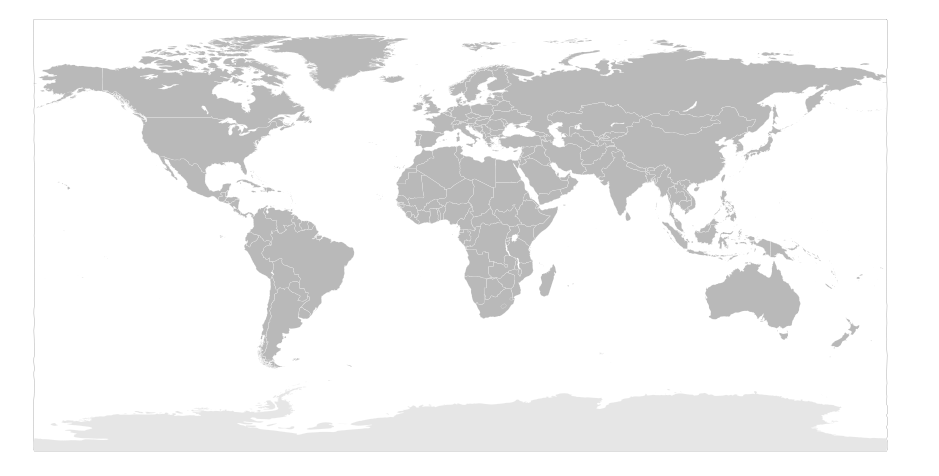

Scorri con il mouse (o con le dita) per muoverti nel tempo, usa lo zoom per allargare o stringere, filtra le categorie e clicca su un evento per leggerne la scheda.
Dove sono nati i motori
Ogni pallino sul planisfero indica il luogo in cui è avvenuto un evento. Clicca su un pallino per aprirne la scheda.

Schemi di funzionamento
Trascina le schede qui sotto nelle caselle numerate, mettendole in ordine dalla più antica alla più recente. Gli anni sono nascosti: aiutati con quello che sai sulla storia dei motori!